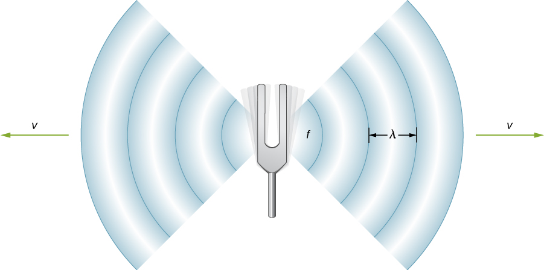
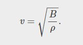
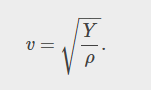
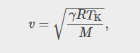
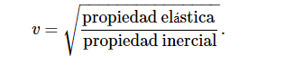
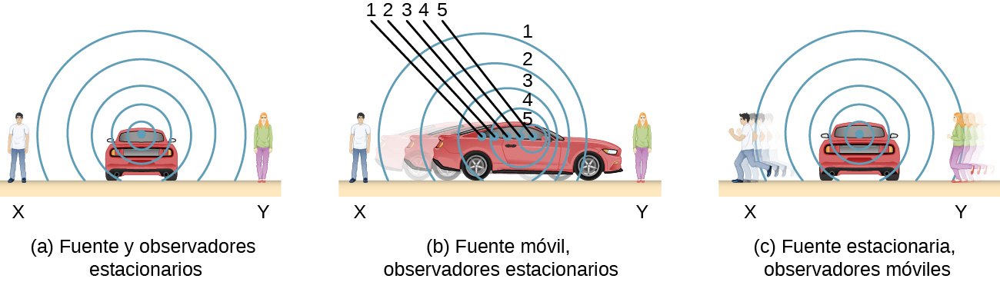

PARCIAL 2
parcial2
PROPAGACION DEL SONIDO
La diferencia entre la velocidad de la luz y la del sonido también puede experimentarse durante una tormenta eléctrica. El destello de la luz se ve, a menudo, antes de escuchar el estruendo del trueno. Es posible que haya oído que si cuenta el número de segundos entre el destello y el sonido, puedes estimar la distancia a la fuente. Cada cinco segundos se convierte en una milla aproximadamente. La velocidad de cualquier onda está relacionada con su frecuencia y longitud de onda mediante.
donde v es la velocidad de la onda, f es su frecuencia y λ
es su longitud de onda. De la sección Ondas recordamos que la longitud de onda es la longitud de la onda medida entre puntos idénticos consecutivos. Por ejemplo, para una onda acuática superficial o una onda sinusoidal en una cuerda, la longitud de onda se puede medir entre cualesquiera dos puntos secuenciales convenientes con la misma altura y pendiente, como entre dos crestas secuenciales o dos depresiones secuenciales. Del mismo modo, la longitud de onda de una onda sonora es la distancia entre partes secuenciales idénticas de una onda, por ejemplo, entre compresiones secuenciales. La frecuencia es la misma que la de la fuente y es el número de ondas que pasan por un punto por unidad de tiempo.

En la Tabla 17.1 se muestra que la velocidad del sonido varía mucho en distintos medios. La velocidad del sonido en un medio depende de la rapidez con la que la energía vibratoria se puede transferir a través del medio. Por esto, la derivación de la velocidad del sonido en un medio depende del medio y de su estado. En general, la ecuación de la velocidad de una onda mecánica en un medio depende de la raíz cuadrada de la fuerza restauradora, o de las propiedades elásticas, dividida entre la propiedad inercial.



INTENSIDAD, TONO Y TIMBRE DEL SONIDO
Una onda sonora es una onda longitudinal que transmite lo que se asocia con sonido. Si se propaga en un medio elástico y continuo genera una variación local de presión o densidad, que se transmite en forma de onda esférica periódica o cuasiperiódica. Mecánicamente las ondas sonoras son un tipo de onda elástica .

EFECTO DOPPLER
h1>
El sonido característico de una motocicleta que pasa zumbando es un ejemplo del Efecto Doppler. En concreto, si usted está parado en una esquina de una calle y observa una ambulancia con la sirena encendida que pasa a una velocidad constante, notará dos cambios característicos en el sonido de la sirena. Primero, el sonido aumenta su volumen a medida que la ambulancia se acerca y disminuye el volumen a medida que se aleja, lo que es de esperar. Pero además, la sirena aguda cambia drásticamente a un sonido más grave. A medida que pasa la ambulancia, la frecuencia del sonido que escucha un observador estacionario cambia de una frecuencia alta constante a una frecuencia baja constante, aunque la sirena esté produciendo una fuente de frecuencia constante. Cuanto más cerca pase la ambulancia, más brusco será el cambio. Además, cuanto más rápido se mueva la ambulancia, mayor será el cambio. También oímos este cambio de frecuencia característico cuando pasan automóviles, aviones y trenes.
El Efecto Doppler es una alteración de la frecuencia observada de un sonido debido al movimiento de la fuente o del observador. Aunque es menos conocido, este efecto es fácilmente perceptible para una fuente estacionaria y un observador en movimiento. Por ejemplo, si pasa por delante de un tren con una bocina de advertencia estacionaria, oirá que la frecuencia de la bocina cambia de alta a baja cuando usted pasa. El cambio real en la frecuencia debido al movimiento relativo de la fuente y el observador se denomina corrimiento Doppler. El Efecto Doppler y el corrimiento Doppler deben su nombre al físico y matemático austriaco Christian Johann Doppler (1803-1853), quien hizo experimentos con fuentes y observadores en movimiento. Doppler, por ejemplo, hizo que los músicos tocaran en un vagón de tren abierto en movimiento y que también lo hicieran parados junto a las vías del tren mientras este pasaba. Se observó su música tanto dentro como fuera del tren, y se midieron los cambios de frecuencia.
